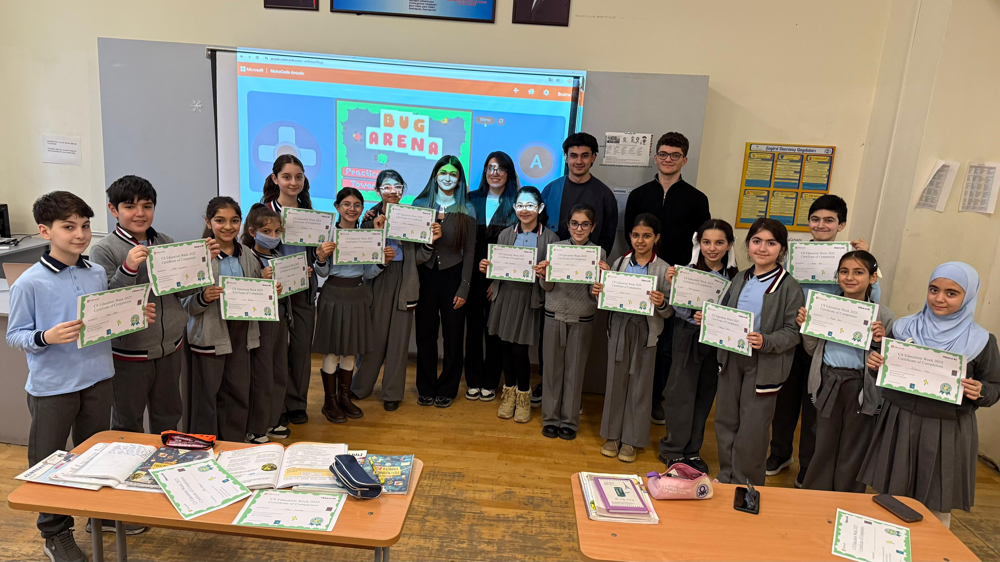

My Projects
A showcase of my creative work
Logic Gates on a Breadboard
Electronics / Hardware
Team: Team23
This project involved constructing basic logic gates with transistors, LEDs, wires, and a breadboard. We collaborated as a team to build the circuit and show how logic gates function in real-world applications.

Hour of AI – Arena Bug Activity
Education / Outreach
Team: Team23
Location: Humanitarian-Technical Lyceum No. 2, named after H.Mahmudbeyov
In this project, we hosted an Hour of AI session featuring the Arena Bug activity. The aim was to introduce students to fundamental artificial intelligence concepts in a fun and interactive manner. We led the students through the activity and demonstrated how AI systems make decisions.
View ProjectWant to work together?
I'm always interested in hearing about new projects and opportunities.
Get In Touch